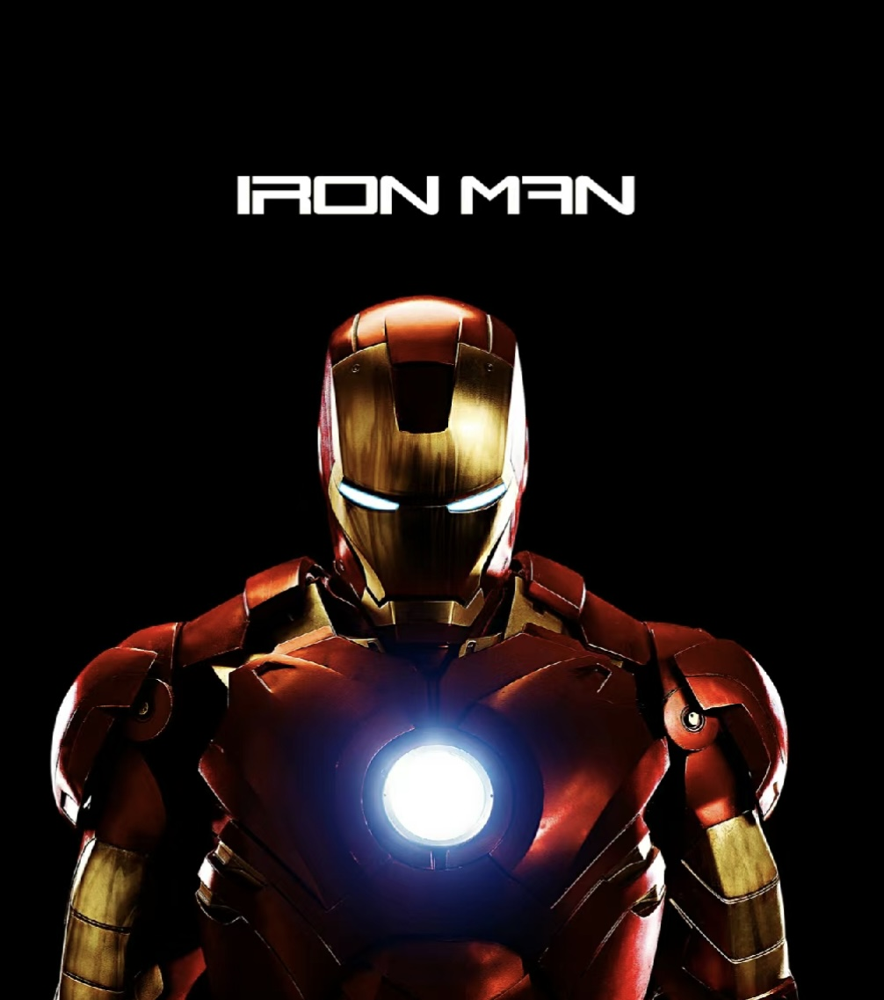

Iron Man is a superhero appearing in American comic books published by Marvel Comics.
Iron Man is the superhero persona of Anthony Edward "Tony" Stark, a businessman and engineer who runs the weapons manufacturer Stark Industries.
Iron Man was a founding member of a superhero team, the Avengers, with Thor, Ant-Man, Wasp and the Hulk.
